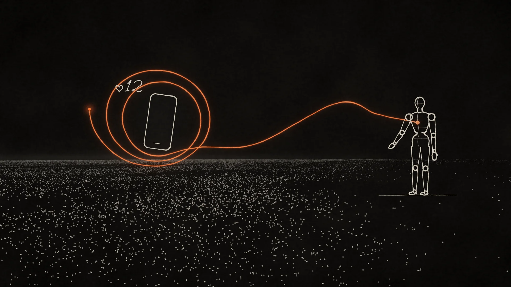
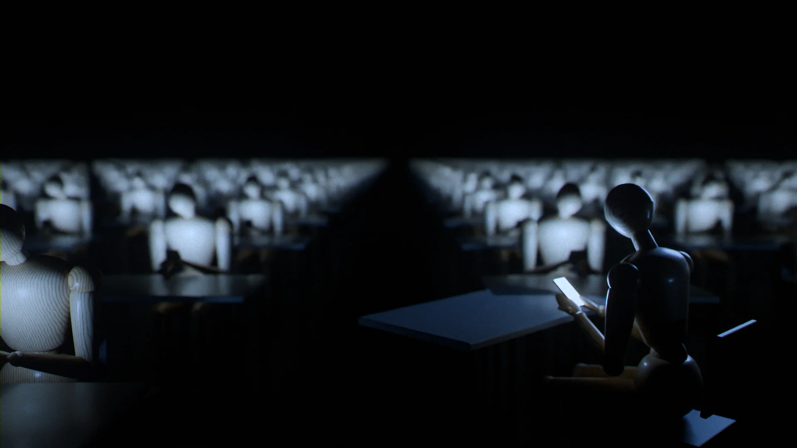
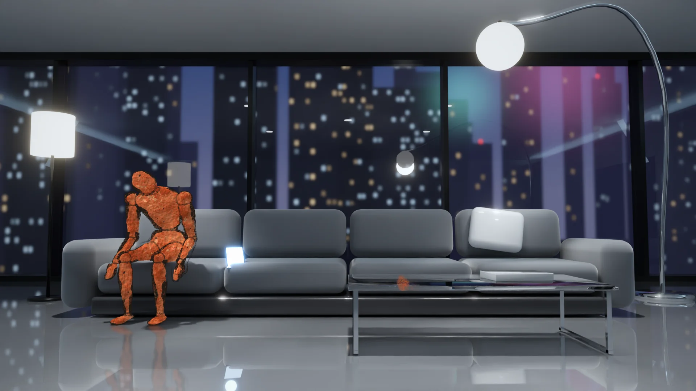

Treatment · You Are Not Broken · new visual version · 27 September 2026
Same words. Five films.
The script of You Are Not Broken stays exactly as published. What changes is everything you see. Here are five completely different ways to put it on screen, all with painter's manikins in place of people.
Every frame on this page was made in this session, in code: a procedural manikin rig, path-traced Blender renders, WebGL, and hand-built ink and paint engines. No image model was used. Pick the direction you want, tell me what to change, and the next round turns it into the film.
Script80 lines · 5:26Recovered word for word from the published film's subtitles. 712 words, unchanged.
Directions5Each with two style frames, a 16-panel storyboard, a look, and a production plan.
Frames102Rendered here, from code. What you see is what each pipeline actually produces.
Your moveRate, pick, commentAt the end of each direction. I read it all back in the next round.
RateGive each direction 1 to 5 stars and tick the one you want. Notes save as you type.CommentUse the Comment button on any storyboard frame, or the comment tool in the top bar, to point at one specific thing.ZoomClick any frame to see it full size, with its line of script and shot notes. Arrow keys step through.
The bar this week
What people have made since Opus 5.5 came out on 22 September
Five days of public work, checked on 27 September. The short version: a lot of clever demos, very few films.
Films rendered in code
Motion graphics that a model wrote
A short history of AI in React and Remotion, with SVG, Canvas, open-source narration and a score synthesised in Python.
The Battle of Austerlitz as a WebGL film with Kokoro narration and synthesised sound, rendered through Chromium and ffmpeg.
"I'm Upping My P(doom)", a 2.5-minute music video painted with p5.brush. Nine chapters were written by parallel sub-agents from a storyboard the model wrote itself.
Single-file three.js worlds: an underwater Antikythera dive, a WebGL2 ocean with caustics, a painted 2.5D battle in six acts.
Impressive because code made them. They still read as motion graphics and tech demos, and almost none of them makes you feel anything.
Opus 5.5 in Blender
Assets and single shots
Higgsfield released production skills for Blender, After Effects, DaVinci Resolve and TouchDesigner.
A Shinkansen train with 5,112 separate objects, down to all 430 seats. A game-ready octopus, modelled and animated.
A 10-second castle-and-fireworks shot built from one prompt: 35 minutes and about $13 of API.
Nobody has shown a model directing a multi-minute Blender film with one consistent character in it.
Generative video
The best photoreal footage, with drift
Kling 3.0 leads the September video rankings: multi-shot sequences, up to 12 references, consistent characters, 4K.
Seedance 2.5 (July) takes up to 50 references for consistency across shots. Veo 3.1 renders true 4K with sound in one pass.
OpenAI has wound Sora down; its API closed on 24 September.
The most praised AI shorts of 2026 look rich, but most share one look, and characters change between cuts.
Gorgeous single shots. Proportions drift, hands melt, and after a while every AI film looks like every other AI film.
The gap. Nobody has shipped a five-minute film with one visual idea from the first frame to the last, one consistent character, cuts locked to every word of a voice-over, and a real score, with the model as director, cinematographer and engineer.
That is what these directions aim at. Each one is built so that the things that usually drift (the character, the timing, the look) are controlled in code.
The whole film is drawn by a single line that never lifts off the page for five minutes. The line draws the figure. Every drive is a loop the line makes. In the modern world the line cannot close its loops and tangles into a knot around the figure. At "You are not broken", one end is pulled and the whole knot runs out straight.
Why it fits
The script's engine is the loop: it opens, pushes you to act, closes. A film made of one line can show a loop closing or failing to close better than any footage can. The painter's mannequin is drawn the way art students draw it, as a construction drawing (egg head, ribcage, pelvis block, ball joints), which is literally a specification of the human body. That echoes Cor, the specification of human needs.

Look
Paper black#0f0d0b
Bone line#efe6d6
Ember#ff5a1f
Graphite#5b554e
Ground: warm black paper, #0f0d0b, with faint paper tooth and a soft vignette.
The line: bone white #efe6d6, a real ink stroke. It thickens on curves and thins on straights (pen pressure), with a slightly wet edge and a small bead of ink at the moving tip. One continuous stroke weight family: 2.5–6 px at 1280 wide.
One accent, used only for the alarm and for loops that stay open: ember #ff5a1f, glowing softly. When a loop closes, its ember cools back to bone white.
The figure: a painter's mannequin drawn as a construction drawing: egg head with a center line, a ribcage oval, a pelvis box, cylinders for limbs, small circles at every joint. Contours drawn as ONE continuous contour where possible (like a single-line Picasso), plus a few interior construction lines.
Scenery is drawn in the same line with far fewer strokes than the figure: a horizon, a fire as three flame loops, huts as arcs, cities as ruled rectangles, phones as rounded rectangles.
The camera is the pen: it glides after the line; a loop in one scene becomes the circle of the next (fire → phone edge → clock face). No cuts in the whole film.
Type: none on screen except at the hinge, where the line writes "You are not broken." in handwriting, and the end card "demismatch.com" written in one stroke.
Sound: felt piano and cello, plus the scratch of a nib on paper synced to the line. Silence at the hinge.
Signature moments
1:52
Everything changed, except you
The line redraws the world around the figure faster and faster: huts, furrows, walls, towers, screen grids, a neural lattice. 10,000 years in 8 seconds. The figure's own lines are never redrawn: still the same stroke from the opening.
2:06
The loop
From the figure's chest the line pulls out an open arc, the figure leans and reaches, the arc lands on another figure and closes into a circle. The figure's shoulders drop.
2:40
Eight billion strangers
The loop reaches toward a field of thousands of dots, touches a phone rectangle and a "♥ 12", spins around it and cannot close. It glows ember.
3:04
The knot
In the litany, each unmet need adds an open ember loop. They layer into a dense scribble until the figure is almost lost inside it.
4:15
The pull
Silence. The line writes "You are not broken." Then someone pulls one end. The knot unravels in one long pull into a straight horizon line, and the figure stands inside it intact.
Motion test Rendered in this session. Loops.
Storyboard 16 beats, 5:26
0:00A01Open
“This is Demismatch.”
Black paper. A bead of ink appears and draws the mannequin in construction lines, standing, small in frame. Beside it, the same line shoots off into an exponential curve that rockets up and out of the frame. The figure stays small and upright.
0:13A02Not anti-tech
“And this project is not anti-technology.”
The figure in profile holds up a tool that is redrawn in sequence: hand-axe, hammer, pen, circuit chip. The hand stays the same line. The chip version, with faint ghost lines of the earlier tools.
0:25A03How we feel
“Look at how we feel.”
The figure sits alone on a chair, hunched. Three thin plotted lines rise behind it like chart lines and bend into the curve of its back.
0:41A04Self-blame
“And for thousands of years, we have done the same thing about it:”
The figure's line turns back on itself: from its own hand a scribbled X crosses out its own chest. Around it, the picture frame (the world) is drawn crooked and askew.
0:50A05Mismatch
“There is a better explanation:”
Two outlines that almost fit: the figure's outline and a doorway outline, offset. A key that does not fit its lock.
0:57A06Human-sized
“For almost all of human history the world barely changed,”
Wide. A fire at the center (three flame loops). Five seated figures close around it. A ring of huts. Around that, a wide ring of tiny standing figures. Faint concentric circles (5 / 50 / 150), like tree rings.
1:12A07Tuned drives
“Every drive in you was tuned to that world.”
A frieze of six small vignettes joined by one continuous line, left to right: two figures and a third at a distance (desire, jealousy); a hand passing food (reciprocity); two heads close, whispering (gossip); a circle of figures with one looking down (belonging, shame); a figure at the edge facing a stranger (wariness); a figure kneeling at a small mound (grief).
1:42A08Everything changed
“And then, beginning with farming, everything changed.”
The figure stands in the center, unchanged. Around it the line has drawn a dense accelerating world: furrows, walls, a skyline, grids of windows, screens, a lattice. Along the bottom, a long line labelled nothing, with a tiny tick at its very end (2,000,000 years vs 10,000).
2:04A09The loop
“Here is what that does to you.”
Two figures. From the first figure's chest an arc opens, reaches, and lands in the second figure's chest, closing into a clean circle. The first figure's posture relaxes.
2:24A10Loneliness
“Take loneliness.”
A figure alone. From its chest an ember loop reaches toward a vast field of tiny dots, a phone rectangle, a heart with a number. The loop spins open, glowing ember.
3:02A11It is everything
“And it is not just loneliness.”
Six or seven open ember loops tied to small objects drawn in the line (a star rating, an empty bed, a chair, a lit window at night, a burning globe, an endless zigzag feed, a candy wrapper), all winding into a knot around the figure.
3:56A12On purpose
“And not by accident.”
Pull back: the knot's loose ends run off to a machine drawn with a ruler, the only ruler-straight lines in the film. It turns a crank to keep the loops spinning. Coins drop out of its base.
4:15A13Not broken
“So let me be clear.”
Black, a single handwritten line: "You are not broken." The figure below it standing intact, the knot unravelling from one pulled end into a straight horizon line.
4:36A14The answer
“Which is why the answer is not to silence the alarm.”
The ember alarm dot in the figure's chest. A hand drawn from outside the frame reaches to cover it, stops. Instead the line redraws the surroundings (a window opens, a door, another figure) and the alarm cools.
4:48A15The new world
“And here is the part that matters most.”
The horizon line becomes the ground of a new world: homes around a shared courtyard, a long table with figures, trees, a tram, solar roofs, a screen showing a friend's face with an arrow to the door. Dozens of small loops closing everywhere like breaths.
5:13A16Close
“You were never broken.”
Pull all the way back: every scene of the film is part of one enormous continuous drawing. The line writes "demismatch.com" in one stroke and lifts off the page.
How it gets made
100% made by Claude in code: a custom ink-line engine (shapes → distance field → contour tracing → one continuous path with pressure and ink texture), animated to the voice-over's word timestamps, rendered frame by frame in headless Chromium at 4K, assembled with ffmpeg.
External: music (license or composer), optional re-record of the VO.
Cost: under $500 (music). Time: 5–8 working days of iteration.
Risk: the whole bet is on the beauty of the line. Done carelessly it looks like an explainer video. Less spectacle than B or D.
Your call on A
BBlender, path-traced$150–1,1002–3 weeks
Human-Sized
A handmade tabletop world, shot macro, where 30 cm wooden manikins live. The film's central claim, that the world used to be human-sized, becomes physical: the ancestral world fits on one round table. The modern world grows past the table's edge into the dark studio, too big to see all at once. At the end, wooden hands build a new world that fits on the table again.
Why it fits
Painter's manikins are 30 cm tall, so their true-scale world is a miniature. Miniatures make scale meaningful: a world you can see whole versus a world that never ends. "Everything changed, except you" becomes a single camera move. It is also the most tactile option: wood, paper, felt and light. People trust handmade things and feel them.

Look
Tungsten#f0a14a
Beech#e2c094
Jute#b89a62
Cardboard#a57c52
Screen LED#8fd6ff
Studio dark#151210
Macro cinematography: 100 mm macro lens, shallow depth of field (f/2.8 look), creamy bokeh, tilt-shift for top-down shots.
Practical light only: warm tungsten work lamps, one "sun" lamp, a little haze. Later, cold LED screen light.
Materials: the savanna is dyed jute and paper grass on a round wooden board; fire is amber resin with an LED; huts are woven reed; the sky is a painted backdrop. The modern world is cardboard, grey board, acrylic and brushed aluminium, with hundreds of tiny glowing screens. The new world is pale timber, glass, moss and warm windows.
Motion: the manikins move in stepped stop-motion (12 fps), the camera moves smoothly (motion control, 24 fps). That mix is the signature of Laika and Wes Anderson's "Isle of Dogs".
Scale as meaning: in the ancestral world the whole world fits in frame. As the world modernises, the camera keeps pulling back and the table cannot contain it. Cardboard towers run off the edge of the table, and city lights become fairy lights that go on into the dark.
Sound: wooden clicks when manikins move, paper rustle, a music-box motif for the human-sized world that later detunes, warm strings.
Signature moments
1:52
Everything changed, except you
A motion-control orbit around one standing manikin while, in stop-motion time-lapse, the diorama is rebuilt around it: huts, fields, brick, steel, glass, screens. The manikin never moves.
2:40
Eight billion strangers
The camera pulls back from one manikin at a tiny desk to reveal thousands of identical desks in rows across a vast warehouse floor, each manikin lit by a phone.
3:51
Loop after loop
A tabletop marble run: each need is a track that should end in a cup, but every track is diverted into an endless spiral. The marbles never land.
4:17
The set is wrong
The studio work lights snap on. We see C-stands, tape, the edge of the table. The manikin stands intact in the middle: "You are not broken."
5:02
Human-sized again
Wooden hands build a new world on the table: timber-and-glass homes around a shared garden, a long table, solar panels, a small tram. The camera rises and the whole new world fits in one frame again. Marbles land in cups everywhere.
Motion test Rendered in this session. Loops.
Storyboard 16 beats, 5:26
0:00B01Open
“This is Demismatch.”
Macro on a manikin's wooden face and shoulder in darkness, one tungsten lamp warming up, dust in the beam. Its elbow joint pin catches the light. Behind it, out of focus, a vast dark model city with tiny lights running past the edge of the table.
0:13B02Not anti-tech
“And this project is not anti-technology.”
A workbench close-up. Tiny tools laid out in a row like jewels: a flint hand-axe, a wooden wheel, a brass lens, a circuit board. A manikin hand rests on the flint.
0:25B03How we feel
“Look at how we feel.”
A cardboard apartment block cut in section, like a dollhouse. Each small room has one manikin alone: in bed, at a desk, curled on a sofa lit by a phone. Cold light, lateral view.
0:41B04Self-blame
“And for thousands of years, we have done the same thing about it:”
One manikin in a small bathroom set, facing a mirror, one hand on its chest. The room is subtly wrong: the door too tall, the ceiling too low.
0:50B05Mismatch
“There is a better explanation:”
Top-down tilt-shift: a small round board of savanna grass with one manikin on it, placed in the middle of a vast grey grid of modern city blocks. It does not fit.
0:57B06Human-sized
“For almost all of human history the world barely changed,”
The whole ancestral world on one round table: a fire in the middle, five manikins sitting close around it, a ring of reed huts, grass, a few figures walking in from the edge. Golden lamp light. Everything visible in one frame.
1:12B07Tuned drives
“Every drive in you was tuned to that world.”
Macro at the fire: two manikin hands touching; one handing food to another; two heads leaning together; one sitting a little apart, head down; at the edge of the light, a stranger's silhouette.
1:42B08Everything changed
“And then, beginning with farming, everything changed.”
One manikin standing still at the center. Around it, the world in mid-rebuild: fields and a brick wall on one side, steel towers, antenna masts and glowing screens on the other. Motion blur on the set, the manikin sharp.
2:04B09The loop
“Here is what that does to you.”
Macro of a wooden marble dropping into a small wooden cup at the end of a short track. A manikin beside it, relaxed. The one closed loop in the film so far.
2:24B10Loneliness
“Take loneliness.”
Pull back: rows and rows of identical tiny desks stretching into darkness, each with a manikin lit by a phone. Thousands.
3:02B11It is everything
“And it is not just loneliness.”
The marble machine: seven wooden tracks with small hand-lettered paper tags (TOUCH, REST, BODY, SAFETY, SEARCH, FOOD, STANDING), each track curling into an endless spiral, marbles mid-flight, the manikin in the middle of it.
3:56B12On purpose
“And not by accident.”
Behind the machine: a small coin-operated mechanism. Each spiral turns a crank that drops a coin into a box. A little price tag hangs from the manikin's wrist.
4:15B13Not broken
“So let me be clear.”
Work lights on. The whole studio visible: C-stands, a lamp, gaffer tape, the table edge. The manikin stands intact at the center of the set in a pool of light.
4:36B14The answer
“Which is why the answer is not to silence the alarm.”
A wooden hand moves a cardboard wall aside and lifts away a tower of glowing screens. Behind it, a window of daylight opens onto the set.
4:48B15The new world
“And here is the part that matters most.”
The same camera as P06, the new world on the same table: pale timber and glass homes around a shared garden, a long outdoor table full of manikins, solar panels, a small tram, trees. Warm late light. It all fits in one frame.
5:13B16Close
“You were never broken.”
Evening. The long table, lamps on, manikins close together. The camera pulls back through the studio door. On the workbench in the foreground, "demismatch.com" is carved into the wood.
How it gets made
Blender, scripted entirely by Claude in Python: a procedural diorama kit (grass, huts, cardboard city, screens, marble runs) and the rigged manikin. Poses keyed pose-to-pose on twos, like real stop-motion.
Rendered path-traced in Cycles on rented cloud GPUs (RunPod or Vast: an RTX 4090 costs about $0.35–0.70 an hour).
Optional: gen-video (Kling 3.0 or Seedance 2.5) for organic inserts like fire and dust, using Blender frames as references.
Cost: GPU rendering $150–600 for 4K; music $0–500. Time: 2–3 weeks.
Risk: the most building. Dozens of miniature environments must be modelled and dressed. In return everything is consistent and controllable: no AI drift, no melting hands.
The figure is painted in one style: red ochre and charcoal, the way humans first painted themselves on cave walls. It never changes. The world around it does. It moves through the history of how we painted our world: cave wall, village fresco, industrial smoke, the lonely night city, and finally flawless glossy CGI and screens. By the modern world the figure is visibly in the wrong picture. Mismatch you can see without a word of explanation.
Why it fits
"You were living in the wrong world" becomes literal: a figure from one picture standing in another. In the cave-wall world the figure and the world share one style, so they fit. The final new world is painted in a style that fits the figure again, while holding trains, solar roofs and screens. The ending is a harmony of styles, not a return to the cave.

Look
Red ochre#b5532e
Charcoal#1e1b19
Limestone#cdbb9c
Night green#1f3a33
Diner light#f3e6a0
CGI chrome#d9dee3
The figure: a painter's manikin in red ochre (#b5532e) with a charcoal outline, finger-smudged, with the grain of rock pigment. Animated at 12 fps with visible boil (the outline shivers slightly frame to frame).
The worlds, one per era:
1. Cave wall (the ancestral world): ochre, charcoal, manganese black and firelight on uneven limestone. Figure and world match.
2. Farming and villages: an earthy fresco or Bruegel-like panel, crowded and detailed. The figure starts to not match.
3. Industry: smoke, steel and gaslight in heavy impasto.
4. The modern city at night: flat planes, hard electric light, deep shadows, isolation. The loneliness beat lives here: a late-night diner counter with manikins, each lit by a phone, the ochre figure outside the glass.
5. The screen age: hyperreal glossy CGI. Chrome, glass, LED, perfectly smooth at 60 fps. The rough ochre figure stutters inside it. This is the loudest mismatch in the film.
6. The new world: a style that harmonises with the figure again. Warm, handmade, ochre and charcoal and light, but full of modern life.
Transitions: repainting. Brush strokes sweep across the frame and repaint the world while the figure stays untouched.
Sound: every era has its own music: bone flute and drum; lute and voices; brass and machines; lonely jazz piano; glossy synth pop and notification sounds; a final theme that combines them.
Signature moments
1:52
Everything changed, except you
A locked camera. The world repaints itself through six eras in eight seconds. The ochre figure in the middle is untouched.
2:40
The night diner
A counter of manikins lit by phones, flat hard light, deep night. The ochre figure is outside the window, the only rough thing in the image.
3:06
The smudge
In the glossy CGI apartment, the figure touches the glass screen and leaves an ochre fingerprint: the only human mark in a world without texture.
4:29
Healthy instrument
Macro on the figure's pigment: grains of ochre, charcoal fibres. It is beautifully made. It is only in the wrong picture.
5:02
The new painting
The final world is painted in the figure's own language, full of trams, solar roofs and lit windows. The figure matches it and walks in.
Motion test Rendered in this session. Loops.
Storyboard 16 beats, 5:26
0:00C01Open
“This is Demismatch.”
A torch-lit limestone wall. An ochre handprint, the oldest human image. Beside it, the ochre-and-charcoal manikin figure, painted, as if just come alive.
0:13C02Not anti-tech
“And this project is not anti-technology.”
The painted figure holds a tool. The tool is painted in a different era's style than the figure: a glossy modern phone rendered in crisp CGI in a charcoal hand.
0:25C03How we feel
“Look at how we feel.”
A hyperreal CGI apartment: glossy floor, grey sofa, big window with a night city. The ochre figure sits alone on the sofa. Its roughness is the only texture in the room.
0:41C04Self-blame
“And for thousands of years, we have done the same thing about it:”
The figure in front of a glossy black mirror, rubbing at its own arm and smearing ochre onto its hand, trying to wipe its own texture off.
0:50C05Mismatch
“There is a better explanation:”
A split frame: left, the figure on the cave wall where it fits; right, the same figure in the CGI room where it does not.
0:57C06Human-sized
“For almost all of human history the world barely changed,”
Back to the cave wall at full glory: a panoramic frieze of a painted band around a fire, children, walkers, hunters. Faint ochre rings around the fire (5 / 50 / 150).
1:12C07Tuned drives
“Every drive in you was tuned to that world.”
A frieze in cave style of small scenes: two figures and a jealous third; sharing meat; a dance around the fire with one figure turned away; a stranger painted in a different pigment at the edge; two hands touching; a burial with flowers.
1:42C08Everything changed
“And then, beginning with farming, everything changed.”
One frame showing the repaint in progress: vertical bands of the world in successive styles from left to right (cave, fresco village, industrial smoke, night city, glossy CGI), with the ochre figure standing unchanged in the middle.
2:04C09The loop
“Here is what that does to you.”
On the cave wall, the figure's own hand has drawn a charcoal circle from its chest to another figure. The circle is closed. Warm firelight.
2:24C10Loneliness
“Take loneliness.”
The night diner: flat planes of hard light, a long counter of manikins each lit by a phone, deep green-black night. The ochre figure stands outside in the dark street, looking in.
3:02C11It is everything
“And it is not just loneliness.”
The glossy CGI world as a wall of perfect product shots: a five-star rating, a vending machine, an office chair, a bright bedroom at 3 a.m., a wall of breaking news, an endless feed, a candy bar. The ochre figure walks through it like a ghost from another painting.
3:56C12On purpose
“And not by accident.”
The ochre figure being scanned into a glossy advertisement: its pigment sampled into a colour swatch on a price tag.
4:15C13Not broken
“So let me be clear.”
Extreme close-up on the figure's painted chest: ochre grains, charcoal fibres, the rock surface. Warm and alive. The CGI world is a cold blur behind.
4:36C14The answer
“Which is why the answer is not to silence the alarm.”
A brush enters the frame, hesitates over the figure, then turns and starts repainting the world around it instead. Half the frame is freshly repainted in warm strokes.
4:48C15The new world
“And here is the part that matters most.”
The new world in the figure's own ochre, charcoal and light: rooftop gardens, a tram, solar roofs, homes around courtyards, a group at a long table under string lights. The figure fits in again.
5:13C16Close
“You were never broken.”
Pull back: the new world is painted on the same cave wall as P01, continuous with the first handprint. A second, fresh handprint sits beside the first one.
How it gets made
Hybrid. Keyframes for each era from an image model with strict style references (public-domain painting traditions; the night-city era is inspired by, never copied from, American realist painting). The figure is always a separate painted layer composited on top, so the models cannot "fix" it into the world's style.
Motion from image-to-video (Kling 3.0 or Seedance 2.5 with style and character references) plus a code-rendered brush-stroke repaint engine for the era transitions, written by Claude.
Cost: generation credits $300–800; music $0–1,000. Time: 2–3 weeks.
Risk: the strongest idea and the hardest to execute. Holding one consistent figure across six painting styles needs disciplined art direction and compositing.
Your call on C
DWebGL, rendered in code by Claude$20–1,1001–2 weeks
Threads
Every drive is a thread of light that leaves the body and has to land somewhere to close. In the band, threads land in other people, and the camp glows like a woven web. In the modern world, threads shoot into screens and numbers and never land. They coil into a burning tangle around one small wooden figure. The film makes the invisible visible.
Why it fits
The script asks the viewer to imagine something they cannot see: a drive as a loop that opens and closes. This direction shows it as light. The warm threads that land (people, touch, rest) and the cold threads that never land (feeds, scores, strangers) make the thesis visible in one image, with no diagrams or infographic cards.
Look
Void#030406
Walnut#4a2f1f
Landed amber#ffb45a
Screen cyan#9fe3ff
Alarm red#ff3b2f
A black void with thin volumetric haze. The manikins are dark oiled walnut, lit only by their own threads: rim-lit silhouettes with warm highlights on the wood.
Threads: luminous filaments with bloom. Warm amber #ffb45a when a thread lands and closes; cold cyan-white #9fe3ff for threads aimed at screens, which never land; an ember red #ff3b2f pulse travels along threads when the alarm fires.
Camera: slow and weightless, with huge changes of scale, from one figure to a planet-sized web of eight billion points. Macro on a thread landing, like a synapse.
Particles: sparks from the campfire drift up and, in the modern world, turn into cold data particles.
Type: none in frame except a thin glowing line of text at the hinge.
Sound: deep analogue drone and choir (Jóhann Jóhannsson, Max Richter). Each thread that lands makes a soft bell tone. Unlanded threads build a high thin whine. Silence at the hinge.
Signature moments
1:04
The camp web
Five figures around a fire joined by thick amber threads. The camera cranes up: the band of fifty joined more thinly, then about 150 points of light. Together they form a glowing mandala.
2:40
Eight billion strangers
The figure's thread shoots out and splits into millions of hair-thin cyan threads that land nowhere: a cold galaxy.
3:51
The cocoon
Each unmet need adds a cyan thread spiralling around the figure until they form a flickering, over-bright tangle like failing neon.
4:01
The spools
Pull back: the tangle's loose ends wind onto huge dark spools, turning. The light is being harvested.
4:17
Still on
All light cuts to black. In the dark, one small warm core light is still on in the figure's chest. "You are not broken."
5:02
The new web
Threads re-route and land in people, in a shared table, in a garden, in a bed with someone. The new web is bigger than the ancestral one and spans a modern city.
Motion test Rendered in this session. Loops.
Storyboard 16 beats, 5:26
0:00D01Open
“This is Demismatch.”
Black. A small warm light pulses in the chest of a dark walnut manikin, rim-lit. Behind it, very far away, a cold endless lattice of light switching on.
0:13D02Not anti-tech
“And this project is not anti-technology.”
The figure holds a stone tool. A warm thread runs from its hand into the tool. Ghosted beside it, the same thread runs into a lamp, a lens, a chip. The thread stays warm.
0:25D03How we feel
“Look at how we feel.”
Several figures standing far apart in the void. Their threads reach toward each other and break off partway, dropping embers. Above them, three thin lines of light rise like graphs.
0:41D04Self-blame
“And for thousands of years, we have done the same thing about it:”
The figure's own thread wraps around its own chest, tight. Behind it a cold grid of light tilts, out of focus.
0:50D05Mismatch
“There is a better explanation:”
One figure between two systems of light: a warm organic web on the left, a cold rigid grid on the right. Its threads reach left.
0:57D06Human-sized
“For almost all of human history the world barely changed,”
The camp web: a fire at the center, five close figures joined by thick amber threads, a ring of fifty joined more thinly, and further out, points of light. Seen from a high angle, it reads as a glowing mandala.
1:12D07Tuned drives
“Every drive in you was tuned to that world.”
The drives at the camp, staged here in one wide shot (in the film each gets its own close-up): a thread landing on a burial mound and fading (grief); two hands meeting where threads fuse (touch); a spark travelling from one figure to another (reciprocity); a straining, reddening thread (jealousy); a head-down figure whose threads dim (shame).
1:42D08Everything changed
“And then, beginning with farming, everything changed.”
The ground has become a cold grid. Buildings of light rise around the still figure: towers, cables, screens. Along the bottom, a long amber thread (two million years) ends in a tiny cyan segment (ten thousand).
2:04D09The loop
“Here is what that does to you.”
Macro: a warm thread leaves one figure's chest, arcs, and lands in another figure's chest with a soft bloom. The light settles to a calm steady glow.
2:24D10Loneliness
“Take loneliness.”
The figure alone, a red pulse running along its thread, which shoots toward a galaxy of cold points and splits into thousands of hair-thin cyan threads that land nowhere. A small glowing number floats among them.
3:02D11It is everything
“And it is not just loneliness.”
Cyan threads from the figure to cold objects made of light (a star rating, an empty bed, a chair, a bright window at night, a wall of breaking news, an endless scrolling column, a candy bar), none landing, all coiling back around the figure into a flickering cocoon.
3:56D12On purpose
“And not by accident.”
Pull back: the cocoon's threads feed into huge dark spools turning in the void, harvesting the light into a glowing ticker line.
4:15D13Not broken
“So let me be clear.”
Near-total black. One small warm light in the chest of the figure, steady. The faintest rim light on the wood.
4:36D14The answer
“Which is why the answer is not to silence the alarm.”
A cold hand of light reaches to smother the red pulse. The figure turns away. Its threads are being re-routed by other warm hands, like someone reweaving a net.
4:48D15The new world
“And here is the part that matters most.”
A modern city drawn in warm light: homes around gardens, a long table, a tram line, solar roofs. Warm threads land everywhere. A new web larger than the old one.
5:13D16Close
“You were never broken.”
High aerial: the new web glowing like a city seen from space at night. In the center, one small figure.
How it gets made
Rendered entirely in code by Claude: WebGL and GLSL (three.js), the manikin rig in 3D, thread physics on splines, volumetric glow and bloom, particle systems. Deterministic and frame-accurate to the voice-over.
Optional: Blender for photoreal walnut close-ups, composited with the code-rendered light.
Cost: final 4K render on a rented GPU $20–80; music $0–1,000. Time: 1–2 weeks.
Risk: abstraction. If the human scenes (a bed, a table, a phone) stop being readable, it becomes a screensaver. Props must stay concrete, lit by the threads.
A live-action short film built on the oldest device in cinema: the match cut. Each modern moment in one manikin's ordinary day cuts, on the same gesture, to the ancestral moment that gesture was built for. A thumb on a phone cuts to a thumb on a child's cheek. Fridge light at 2 a.m. cuts to firelight at night. A crowd of strangers cuts to walking with the band. The viewer feels the gap in a single cut.
Why it fits
The script's claim is that the drive is the same and only the world changed. A match cut is that sentence in film grammar: same body, same gesture, different world. It needs no diagrams. It follows one character, which is the strongest route to emotion for a general audience.
Look
Modern teal#2f6f78
Screen blue#7fb7ff
Firelight#f08a3c
Dusk gold#e7b467
Film black#0b0c0d
Cinema: 2.39:1 anamorphic widescreen, 35 mm grain, soft halation.
Modern world: handheld, documentary, cold blue-green practical light (screens, fluorescent tubes, street lamps).
Ancestral world: locked-off wide lenses, golden firelight and dusk.
The manikins act through posture alone. No faces needed.
Split screen only at the key moments (mismatch, the hinge). At the end the split line dissolves and both worlds are in one frame.
Type: tiny white small caps in the corner for chapter names. No infographics.
Sound leads: a phone buzz becomes a crackling fire, office air conditioning becomes wind in grass. Every match cut is also a sound cut. Music enters late, on strings.
Signature moments
0:00
Wake
A phone alarm at 6:00; the manikin's hand reaches to silence it. Cut on the same reach to a hand touching a sleeping companion's shoulder at dawn.
2:50
Faces
A thumb flicking through faces on a screen. Cut on the same motion to a thumb stroking an infant's cheek by the fire.
3:06
The litany
Seven match-cut pairs, faster and faster.
4:17
The split
At the hinge the frame splits. The modern self, alone, and the ancestral self, among people, turn to look at each other across the split line.
5:02
The merge
The split line dissolves into a new world where the best of both halves share one frame: a modern courtyard, a long table, a phone face down.
Motion test Rendered in this session. Loops.
Storyboard 16 beats, 5:26
cut to
0:00E01Open
“This is Demismatch.”
(a) 6:00 a.m., seen from above: blue dawn through the blinds of a small modern bedroom, a manikin's hand reaching for the glowing phone on the nightstand. (b) The same reach from the same angle in a reed hut at dawn, landing on a sleeping companion's shoulder.
cut to
0:13E02Not anti-tech
“And this project is not anti-technology.”
(a) Hands typing on a laptop in a dark room. (b) The same hands knapping a flint in the same rhythm, by a fire.
cut to
0:25E03How we feel
“Look at how we feel.”
(a) A manikin alone in a fluorescent open-plan office at night, rows of empty desks. (b) Rain on a window of a night bus, a manikin's head against the glass.
cut to
0:41E04Self-blame
“And for thousands of years, we have done the same thing about it:”
(a) A small bathroom at night, the manikin leaning on the sink, facing the mirror, one hand on its own chest. (b) Pull back: the bathroom is the only lit window in a huge dark apartment block.
0:50E05Mismatch
“There is a better explanation:”
Split screen, one frame: left, hunched at a laptop at night; right, the same pose, sitting by a fire among others.
cut to
0:57E06Human-sized
“For almost all of human history the world barely changed,”
(a) Golden hour: a band of manikins walking together through tall grass, a child carried on shoulders. (b) Night: a circle of manikins around a fire, close together.
cut to
1:12E07Tuned drives
“Every drive in you was tuned to that world.”
(a) Around the fire, one manikin looks at another across the flames; a third watches. (b) The same glance, a manikin in bed looking at a dating-app-like screen of faces (generic, no brand).
1:42E08Everything changed
“And then, beginning with farming, everything changed.”
A single frame from a hyper-montage: the same manikin, looking up, standing in a vast server hall of blinking racks. (Label: one of 12 cuts, field → village → city → factory → office → screens → server hall.)
cut to
2:04E09The loop
“Here is what that does to you.”
(a) A hungry manikin reaching into a fruit tree. (b) The same manikin lying back in the grass, satisfied, eyes to the sky. The loop closed.
cut to
2:24E10Loneliness
“Take loneliness.”
(a) 2 a.m., a manikin at a kitchen table lit only by the open fridge and a phone. (b) Night, outside the camp: a lone manikin by a small fire, and another manikin sitting down beside it.
cut to
3:02E11It is everything
“And it is not just loneliness.”
(a) A manikin in a car in a traffic jam at night, red tail lights. (b) The same pose: walking with the band across open country at sunrise.
cut to
3:56E12On purpose
“And not by accident.”
(a) A glass office at night: manikins watching a wall of dashboards. (b) On one screen, our manikin at its kitchen table, seen as a data point.
4:15E13Not broken
“So let me be clear.”
Split screen: left, the modern manikin looking up from its phone, lit blue; right, its ancestral self by the fire, lit gold. They look toward each other across the split line.
cut to
4:36E14The answer
“Which is why the answer is not to silence the alarm.”
(a) The phone set face down on the table. (b) The manikin opening the front door, warm light outside.
4:48E15The new world
“And here is the part that matters most.”
No split, seen from balcony height: a modern courtyard of timber homes, a long table under a solar pergola, a lawn with kids playing, a tram passing in the gap, evening sun.
cut to
5:13E16Close
“You were never broken.”
(a) A fire pit in the modern courtyard at night, manikins around it, faces lit warm. (b) Back in the bedroom from P01: the hand now resting on another manikin's shoulder, the phone dark.
How it gets made
Gen-video: Kling 3.0 (multi-shot, up to 12 references, 4K, consistent characters), Seedance 2.5 (up to 50 references, long takes), Veo 3.1 for 4K hero shots.
Consistency: Claude renders a manikin reference sheet and the exact match-cut poses in Blender, and uses them as start and end frames for both halves of every pair, so the gesture matches to the frame.
Edit, grade, sound and titles assembled by Claude in code (or handed to DaVinci Resolve).
Cost: generation credits $400–1,000 including re-rolls; music $0–1,000. Time: 2–3 weeks.
Risk: gen-video drift (proportions change, hands mutate) and the look many AI films share. Of the five, this is closest to the old film's photoreal surface, even though the grammar is completely different (motion, match cuts, no cards).
Your call on E
Side by side
How the five compare
My scores, 1 to 5, before your notes. "Control" means how exactly the final film will match what we plan: no drift, no melting hands, every cut on the word. "Made by Claude" is the share of the finished film I can produce myself in code.
Direction
Emotional pull
Stops the scroll
Never seen before
Control
Budget
Time
Made by Claude
Best for
AOne Line
●●●●●
●●●●●
●●●●●
●●●●●
$0–500
5–8 days
~100%
A calm, exact film, finished fast. The loop idea is clearest here.
BHuman-Sized
●●●●●
●●●●●
●●●●●
●●●●●
$150–1,100
2–3 weeks
~95%
The film people share because they cannot believe a model made it. Tactile, warm, and the scale idea carries the thesis.
CThe Wrong Painting
●●●●●
●●●●●
●●●●●
●●●●●
$300–1,800
2–3 weeks
~50%
The idea explains itself in one frame. Hardest to hold together over five minutes.
DThreads
●●●●●
●●●●●
●●●●●
●●●●●
$20–1,100
1–2 weeks
~100%
The most striking stills, and the loop made literally visible. Risk of drifting into abstraction.
EMatch Cut
●●●●●
●●●●●
●●●●●
●●●●●
$400–2,000
2–3 weeks
~40%
The most direct emotion for a general audience. Closest to the old film's photoreal surface.
My recommendation
If it were my call: B, Human-Sized. If you want it finished in under two weeks: D, Threads.
Why B. It is the only direction where the thesis becomes something you can see without being told. The ancestral world fits on one table; the modern one runs off the edge of it. "Everything changed, except you" is one camera move around a manikin that never moves. The held-open loops are a marble run where no marble ever lands in its cup. And "You are not broken" is the moment the studio lights come on and you see that the set is the thing that is wrong. People look closely at miniatures, and they trust and share things that look handmade.
Why it beats what exists. Nobody has shown a model build and shoot a five-minute path-traced stop-motion film with one consistent character across dozens of sets. The frames above were rendered on four shared CPU cores in this one session. On rented GPUs the same scripts render the whole film at 4K.
The risks. B is the most building of the five: every set has to be modelled and dressed, and the manikins must move pose-to-pose well enough to feel like real stop-motion, not CG. That is two to three weeks, not days. D gets you the most striking images and the clearest picture of the loop for less money and half the time, but it can slide into abstraction if the human scenes stop being concrete. A is the safe, beautiful, cheap option. C is the strongest idea on paper and the hardest to hold together for five minutes. E is the most direct emotion, but it depends on generative video and looks closest to the film you already have.
What the next round would be, for B. Lock the look with three shots at final quality (the city grid, the marble run, the new world on the table) and a 20-second test of "Everything changed, except you" cut to the real voice-over. If that test makes you feel something, build the rest in parallel, set by set, and render the film on GPUs.
What I need from you
Decisions, and the tools to make the film
Decisions only you can make
Which direction, or which combination. Rate and pick above; say in the notes what to steal from the others.
The voice. Keep the published ElevenLabs "Brian" track, which is fastest and locks the timing, or re-record. In June your own full read was judged the better film narration; a new visual film is a good moment to decide that again.
The music. License a track, commission a composer, or let me write and synthesise a score in code. I can do the last one, but a good composer will beat it on emotional weight.
Formats. Keep the 5:26 cut only, or also make a 60-second vertical version for social from the same material. Every direction here can produce both.
Access I need
This cloud session can only reach Google's APIs. fal.ai, Replicate, Kling, Runway, ElevenLabs, RunPod and Vast are blocked by the environment's network policy. Either change Network access in the environment settings (the environment menu in the session's title bar, then Edit) to a broader level or add those hosts, or I run the generation steps from Claude Code on your Mac, where everything is reachable.
A or D: nothing beyond music. I can render the whole film in this session.
B: GPU time for the final 4K path-traced render, about $150–600 on RunPod or Vast.ai (an account, and network access to it). Without it I render at 1080p on CPU over several days.
C or E: a fal.ai key (one key reaches Kling 3.0, Seedance 2.5 and Veo 3.1), or a Google Gemini API key for Veo 3.1 and Google's image models, which this session can already reach. Budget $300–1,000 of credits including re-rolls.
Voice: ElevenLabs API access if we re-record or regenerate lines.
The script, unchanged
You Are Not Broken, as published
Recovered from the burned-in subtitles of the published film (5:26). Timecodes are where each line appears on screen. All five directions keep these words and this timing.
Show all 80 lines
01 Open
0:00
This is Demismatch.
0:03
The first thing I need to tell you is that you are not broken.
0:07
You are a linear creature in an exponentially weird world.
02 Not anti-tech
0:13
And this project is not anti-technology.
0:16
We are a tool-making species.
0:18
Technology is as human as our biology.
0:22
The only question is how we use it.
03 How we feel
0:25
Look at how we feel.
0:28
Loneliness is an epidemic.
0:31
Anxiety and depression keep climbing.
0:34
Meaning keeps getting harder to find.
0:36
By any honest measure we are not thriving.
04 Self-blame
0:41
And for thousands of years, we have done the same thing about it:
0:44
we blamed ourselves for the pain, and never the world that caused it.
05 Mismatch
0:50
There is a better explanation:
0:52
It comes from evolutionary biology and it is called “mismatch.”
06 Human-sized
0:57
For almost all of human history the world barely changed,
1:01
and it stayed ‘human-sized’.
1:04
With a few people you would die for, a band you lived beside,
1:08
and around a hundred and fifty you knew by name.
07 Tuned drives
1:12
Every drive in you was tuned to that world.
1:16
Desire, and the jealousy that guards it.
1:20
Reciprocity, and the gossip that enforces it.
1:24
Belonging, but also the shame of falling short.
1:29
And the wariness of strangers.
1:32
Touch, and disgust.
1:35
And the grief it costs.
08 Everything changed
1:42
And then, beginning with farming, everything changed.
1:47
Cities, money, bosses, screens, AI.
1:52
Everything changed, except you.
1:56
Your instincts were shaped over millions of years.
2:00
They do not rebuild in ten thousand.
09 The loop
2:04
Here is what that does to you.
2:06
Every instinct works like a loop.
2:09
It opens, it pushes you to act,
2:13
and the moment you get what it is actually asking for, it closes.
2:19
The feeling settles.
2:21
The drive lets go.
10 Loneliness
2:24
Take loneliness.
2:26
For your ancestors being alone meant death,
2:31
so you carry an alarm that fires the moment you feel cut off.
2:35
Be truly seen and known by your people, and it goes quiet again.
2:40
Now look at where that alarm runs today: eight billion strangers.
2:46
A number under a photo standing in for being loved.
2:50
Faces on a screen you will never touch.
2:53
So it fires and fires, and never gets the one thing that would switch it off.
2:59
The loop stays open.
11 It is everything
3:02
And it is not just loneliness.
3:04
It is everything.
3:06
The need to matter to the people around you, now answered by a score you can never win.
3:12
The need for touch, going unmet for days at a time.
3:17
The need to use your body, trapped in a life that asks you to sit still.
3:22
The need for deep rest in a world where the light and the noise never stop.
3:27
The need to feel safe, drowned out by every danger on earth arriving at once, none of them yours to fix.
3:35
The drive to search until you find what you need and stop, caught in a feed, built so you never finish.
3:43
The pull toward sugar and fat that once kept you alive, turned against you by food engineered so you can’t put it down.
3:51
Loop after loop, held open.
12 On purpose
3:56
And not by accident.
3:57
A drive that settles is a drive that lets you walk away.
4:01
So the loop is kept open on purpose, because an open loop is profitable, and a closed one is not.
4:09
The most human parts of you have been turned into the thing being sold.
13 Not broken
4:15
So let me be clear.
4:17
You are not broken.
4:19
Every one of these systems is doing its job perfectly.
4:23
The signal is right, the world is wrong.
4:29
It is a healthy instrument, reading a world it was never built for,
4:33
and telling you the truth.
14 The answer
4:36
Which is why the answer is not to silence the alarm.
4:40
You do not fix a working alarm.
4:44
You change the thing it is warning you about.
15 The new world
4:48
And here is the part that matters most.
4:51
The world a human thrives in is not somewhere in the past.
4:55
We are not going back.
4:57
The answer is not a cabin in the woods, and it is not less technology.
5:02
It is a new world, built on purpose, with the best tools we have,
5:07
designed so these loops can finally close inside the life you actually live.